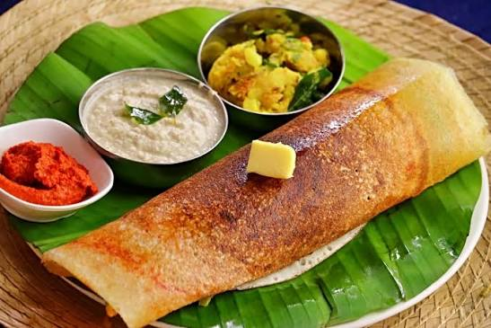

Dosa is a popular South Indian dish made from a fermented batter of rice and urad dal. It is a thin, crispy savoury pancake that is commonly eaten for breakfast, although it can be enjoyed at any time of the day. Dosa is known for its light texture and delicious flavour and is widely enjoyed across India.
Dosa can be served in different varieties, such as plain dosa, masala dosa, and cheese dosa. It is usually served hot with coconut chutney and sambar. Because of its simple ingredients and unique preparation method, dosa is both a flavourful and satisfying meal.